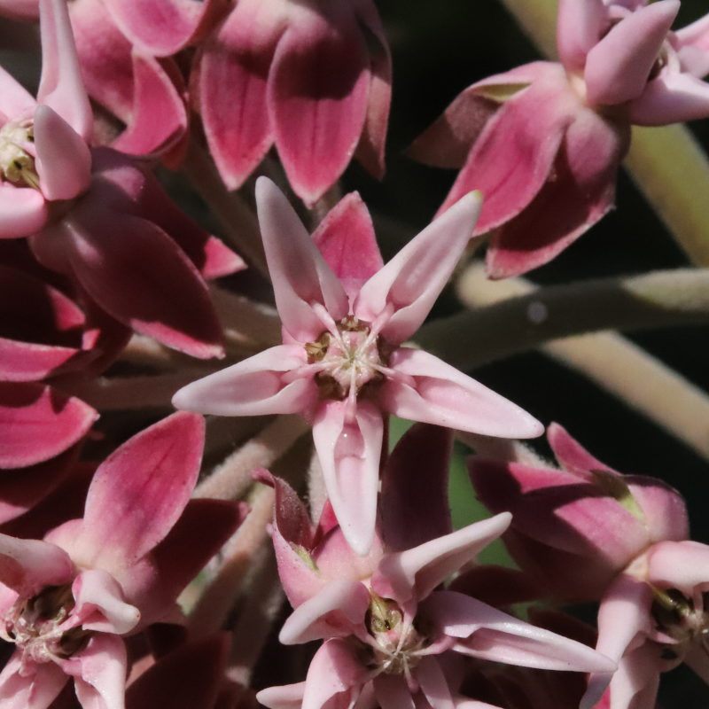

How do foliar and floral chemical traits alter insect behavior, and how do interactions with insects alter plant chemistry in different tissues? How does plant chemistry mediate interactions between herbivores and pollinators?
Potential mechanisms of interaction between leaf and nectar feeding insects
To maximize their fitness, plants must reach an equilibrium between energy allocated to defense against herbivores and energy devoted to the attraction of pollinators. As plants respond adaptively to visiting insects, such as by increasing defensive compounds in their leaves after herbivore damage or decreasing volatile attractants after pollination, the chemical traits of foliar and floral tissues are constantly being tuned to the specific interactions a plant experiences. While folivores and pollinators are directly impacted, and directly impact, the chemistry of the tissues they interact with, they are also capable of altering plant chemistry in other tissues, and may indirectly alter interactions between plants and other guilds of insects. Additionally, many phytochemicals used to defend against herbivores and attract pollinators have shared biosynthetic pathways. The induction or down-stepping of a pathway in response to insect activity in one tissue can alter the regulation of the same pathway in other tissues, altering the chemical profiles involved in plant-insect interactions. My research aims to explore the current state of knowledge of plants as a chemical landscape driving insect interactions across taxa using large scale meta-analysis, and with controlled common garden experiments focusing on individual species.
The adaptive role of specialized necar chemistry
How does specialized milkweed nectar chemistry alter pollinator behavior and plant fitness?

Accumulated nectar in the hood of an Asclepias speciosa flower
Although pollination is a multimodal process, with insects making use of visual, olfactory, tactile, and gustatory cues to locate flowers, nectar a major interface between pollinators and plants when on the flower. As such, nectar is an interface through which plants can manipulate insect behavior. Nectar is a high energy reward, and many non-pollinators have developed strategies to consume nectar while bypassing plant structures that deposit pollen. Additionally, many insects pollinate plants with low efficiency, consuming a disproportionate amount of nectar for the amount of pollen they transfer. Chemical means of filtering out low quality pollinators and larcenists, or improving the quality of visiting pollinators, would greatly improve a plant's ability to reproduce. Many plants produce specialized metabolites in their nectar, including some with insecticidal properties. However, little is known about the adaptive nature of these compounds and how the affect visiting nectar feeders. My research combines field observations of pollinators with in-vivo studies of nectar chemistry to understand how changes in plant chemistry alter pollinator behavior, and how changes in pollinator quality affect plant fitness.
Using computer vision for automatic insect surveys
How can machine learning facilitate surveys of biodiveristy and insect behavior in the field?
Bumblebee with genus level identification assigned by a convolutional neural network
Field based studies of pollinator behavior are frequently limited in scope. The amount of labor required to observe flowers for extended time periods means that many pollinator studies lack the data to accurately estimate pollinator visitation rates and foraging times. While video based methods for collecting visitation data can avoid some of these issues, considerable storage space and post-processing are required to extract usable data from videos. To address these problems, I've developed a system of computer vision models capable of cropping insects from videos and identifying them to species in real time. Built on a hand-annotated dataset of over 500,000 insect images, this system is capable of cropping 98% of insects, and can identify over 340 species of North American pollinators with greater than 90% accuracy. I am currently working on expanding these models to be able to be tuned to insect species from any location across the globe automatically. These models can easily be applied to any image or video data, from laboratory or field environments.
Publications
* Indicates preprints
A. Grele, T. J. Massad, K. A. Uckele, L. Dyer, Y. Antonini, L. Braga, M. L. Forister, L. Sulca-Garro, M. Kato, and H. G. Lopez. 2023. Intra and interspecific diversity in a tropical plant clade alter herbivory and ecosystem resilience. bioRxiv:2023–03.
Massad, T., A. R. Nascimento, D. Campos, W. Simbaña, H. G. Lopez, L. S. Garro, C. Lepesqueur, L. Richards, M. Forister, J. Stireman, E. Tepe, K. Uckele, L. Braga, T. Walla, A. Smilanich, A. Grele, and L. Dyer. 2023. Variation in the strength of local and regional determinants of herbivory across the Neotropics.
Getman‐Pickering, Z. L., A. Campbell, N. Aflitto, A. Grele, J. K. Davis, and T. A. Ugine. 2020. LeafByte: A mobile application that measures leaf area and herbivory quickly and accurately. Methods in Ecology and Evolution 11:215–221.
Presentations
* Indicates posters, † indicates talks
Grele A, Richards L. Simulated herbivory increases plant fitness by altering floral traits and pollinator behavior. 2023 Mar 2. Gordan Research Conference
Grele A, Richards L. Using machine learning to study pollination with high temporal and taxonomic resolution. Entomology 2022 Nov 16. ESA.
Grele A, Aflitto NC, Thaler JS. Species-specific responses of the Colorado potato beetle to pheromone cues of predatory and phytophagous pentatomids. Entomology 2018 Nov 12. ESA.